This user guide is designed to guide you through the functions of MTrade Plus, providing step by step instructions and links to all related information that you may require.
Note: Certain features mentioned in the help guide is only available in our Live paid accounts. The prices in the demo account are subjected to a 15 minute delay.
Document Conventions:
- icon is used when writing a Tip.
 icon is used when writing a Note.
icon is used when writing a Note.
Listed below are the hardware and software requirements you need to have in order to install the application on your mobile.
Web:
- Chrome v37+, Opera v29+, IE v10+, Firefox v38+, Safari v7+ at 1366 * 768 resolution
Basic machine configurations:
- Processor: Intel Core 2 Duo
- Installed Memory (RAM): 2 GB
IOS
Devices: iPhone 4S and above
OS: iOS 7.1 and above
Browser: Mobile Safari v7.1 and above, Chrome iOS v38.0 and above
Android
Devices: Work on any device
OS: 4.4 and above (KitKat, Lollipop, and Marshmallow)
Browser: Google Chrome Android v38.0
If you need further technical support, please contact us;
Head Office:
Mubasher Financial Services181 Platinum Tower, Building 190,
Road 2803, Al Seef District,
Manama, Kingdom of Bahrain.
Tel: +973 17556139
Fax: +973 17556124
Contact Client Services:
From within Bahrain: 1730 0849 or 1755 6139From outside Bahrain: +973 1730 0849 or +973 1755 6139
Email: global@mubashertrade.com
Fax: +973 1755 6124
Contact Dealing Room:
From Within Bahrain: 1760 0105From outside Bahrain: +973 1760 0105
MTrade Plus is a comprehensive, sophisticated trading platform tailored to active investors. The unique market features in MTrade Plus provide you with the edge you need to be an effective trader in the fast moving market. MTrade Plus supports the full functionality of trading in equity and the application is fully integrated with advanced charting tools to help you analyze the market movement.
Note: In the application,  icon represents market data is delayed by at least 15 minutes.
icon represents market data is delayed by at least 15 minutes.
How to login to the application:
- Enter the Username.
- Enter the Password using the virtual keyboard.
- Tap Login.
Optional: Tap the Remember Unsername check box to save the username and the password to avoid entering them every time you login to the application.
How to logout from the application:
- Click the logout button 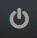 located at the top right corner.
- In the dialog box that opens, click OK to confirm the action.
How to place the first order:
- There are several ways to add symbols to the Order Ticket.
- In the Watch List click on the icon next to your symbol OR right-click on your symbol. Then click on the
 tab
tab
- On the Detail Quote of a symbol, click the BUY icon
 .
. - In the Order Book of a symbol, click on the BUY cell 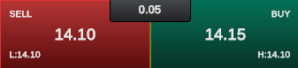
- In the Order Ticket, type and search the symbol name on the Symbol field.
In the Order Ticket,
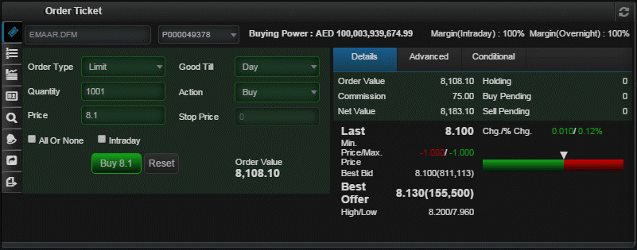 - In the Watch List click on the icon next to your symbol OR right-click on your symbol. Then click on the
- If you have more than one portfolio, then select the required from the Portfolio drop down.
- Select the required Order Type.
- Market - is sent to the market and is executed at the best bid for sell orders or best ask for buy orders, as available at the time.
- Limit - is an order where the maximum buying price or the minimum selling price is specified. The order will be executed at the specified price or better.
- Stop - is a market order that is sent to the exchange when the trigger price (the STOP price) is touched. When the specified price is reached, your Stop Order becomes a Market Order and is executed at the best available price.
- Stop Limit - is an order that combines the features of a Stop Order and a Limit Order. It is an order to buy a security at no more or sell at no less than a specified Limit Price. Once the Stop Price is reached, the Limit Order is sent to the exchange to buy or to sell at a specified price.
- Enter the Quantity of stocks and the Price of a stock that you are going to purchase. Price is not a mandatory field for ‘Market’ orders.
- Select other optional order details depending on your requirement.
- Once the required details are entered, you can tap the Buy button.
- In the Confirm Order window enter your Trading Password and click Confirm Order.
Different Order Types:
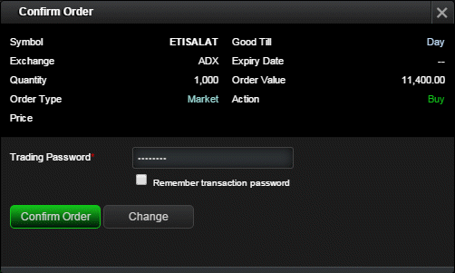
After you placed the order you can monitor its progress using the Order List.
This section gives real-time update on your trading status and the portfolio valuation.
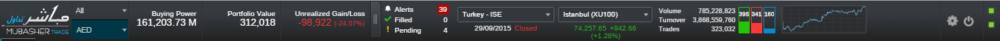
Buying Power: - This is the total amount of cash held in your account
Portfolio Value: - The value of the stocks held in the portfolio based on the last traded price
Unrealized Gain/Loss: - This shows the unrealized profit or loss as a percentage
Alerts: - This shows the total of trading alerts and advices you have received
Filled: - Number of orders that got successfully executed
Pending: - Number of orders that did not get executed by the time
Market data: - This contains the default markets come for your package. You can select a required market from the dropdown given and see the current date, time and the status of that market.
Sector details: - When you select a market you will see here its main index details. By clicking on the dropdown you can select more indices
Volume: - Number of shares traded in the market.
Turnover: - The value of shares traded during the day
Trades: - The number of securities traded for the day
Market Summary Indication: - Displays the number of gainers, losers and unchanged symbols in the selected market in green, red, and blue
Chart: - The Intraday Graph for the selected sector in the Status Panel
Tips:
- By clicking on the Volume, Turnover and Trades values, you can invoke the Index Detail Quote which contains the Index chart.
- Click on the
 icon to hide/unhide details of your portfolio
icon to hide/unhide details of your portfolio
Tips:
The following windows open when you double-click on Watch list columns. Right-click on a symbol in the Watch list to; To add columns to the Watch List: By default the Custom Watch List comes with a set of symbols that you may wish to trade with, however you have the option to remove those symbols as desired and add only the symbols that you may require by following the below given steps. To add symbols to the Custom Watch List: To remove symbols from the Custom Watch List: The symbol will be removed from the Watch List. To view Full Market data: Smart Watch List shows price data of symbols that are in your Order List or Portfolio. To view the Smart Watch List: Use Watch List Chart to analyze the market through a comparison of average volume and percentage change. Horizontal axis:- Volume / 5 Day Average volume. Vertical axis:- is the %Change, so what is on the top has the highest positive %Change. Cross line is located at the value of 1.00. Therefore what is right to that cross line is traded at a higher volume than average and what is left to the cross line is traded at a lower volume than the average. When the market opens all stocks will be on zero as there is no volume and 0%. As time passes, stocks will start moving to one of the following locations in response to the change in volume and % change. A: Volume is higher and % change is positive B: Volume is below average & % change is negative C: Stock is traded like average of past 5 days with 0 change D: Normal volume with positive % change E: Normal volume with negative % change F: It’s the dream for any stock holder. Stock is flying high at high volume so it has momentum to fly up & up Watch List Grid displays the symbols in your Watch list in a Grid layout, with the option to place quick trades by looking at the buy and sell prices. To view Custom/ Smart Watch List / Full Market in Grid layout: To place trades on the Watch List Grid: You can track the status of the order from the Order List.  icon gives BUY advices
icon gives BUY advices
Link Feature
The link feature will allow you to link panels of your choice and change the panels reflecting your symbol’s data, with only a simple click on your symbol.
 icon on the top right hand corner of your panel
icon on the top right hand corner of your panel
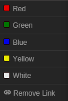
 displayed against the column name. You will see the column name added and displayed in the selected columns section at the right side.
displayed against the column name. You will see the column name added and displayed in the selected columns section at the right side.
Notes:
To expand the panel click on maximize 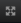 icon.

 ,and choose 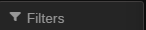 Filters on the right hand corner of the widget.
Click the Filter button on the Watch List. Note: You can add only 25 symbols per custom watch list.
,and choose 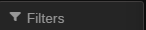 Filters on the right hand corner of the widget.
Click the Filter button on the Watch List. Note: You can add only 25 symbols per custom watch list.
To create multiple Custom Watch lists
Delete a Custom Watch list
,and choose 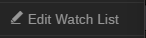 on the right hand corner of the widget. to save. ,and choose on the right hand corner of the widget.
to save. ,and choose on the right hand corner of the widget. and confirm by clicking on OK.
and confirm by clicking on OK.
Note: Full Market data is given based on your package settings.
 .
.
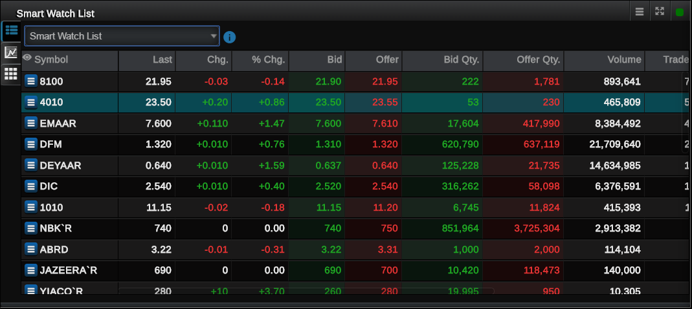
.
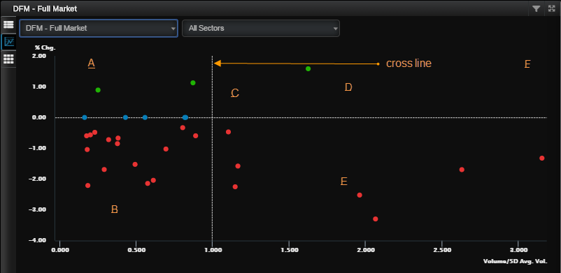
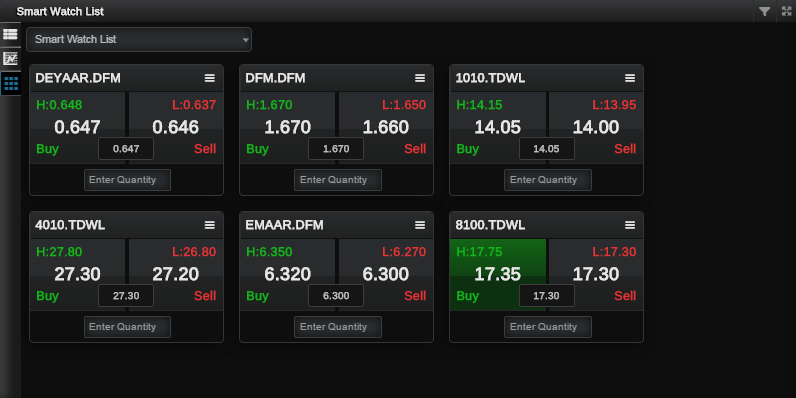
The Chart provides an easy-to-read graphical representation of a security's price movement over a specific period of time. With the use of chart you can analyze a wide range of securities and forecast their future price movements.
On the chart, the y-axis (vertical axis) represents the price scale and the x-axis (horizontal axis) represents the time scale. Prices are plotted from left to right across the x-axis with the most recent plot being the furthest right.
There are two methods that you can access charts.
- Trade
- Chart is displayed on Trade.
- Do one of the following;
- When you click on a symbol in the Watch List, the Chart of the selected symbol is displayed.
- In the Symbol field of the chart window, enter the symbol name that you want to view the chart.
-Or-
- Tabs
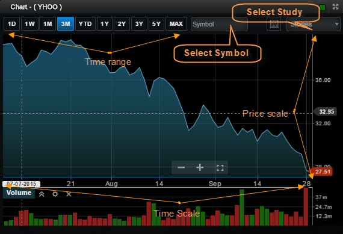
To view the Stock Chart:
To change the chart period:
Tap on the required time period. e.g.: 1D, 1W, 1M, YTD, 1Y etc.
Studies:
Click on the chart study dropdown to select a chart of your preference.
As a default the stock and Volume charts are displayed here.
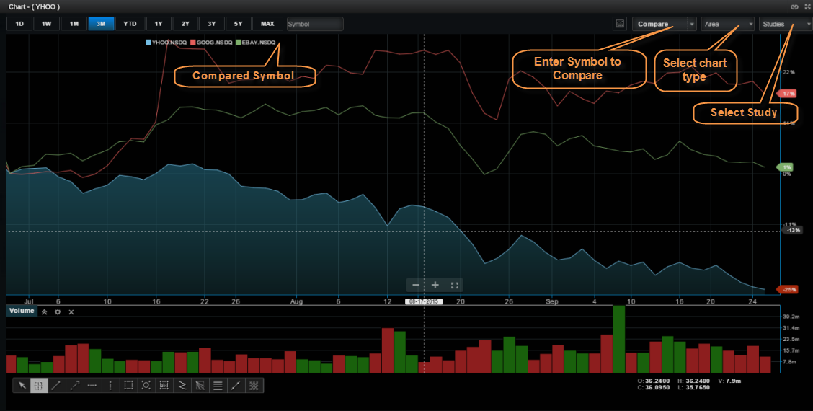
To display the chart of your preference do one of the following;
- When you click on a symbol in the Watch List, the Chart of the selected symbol is displayed
- In the Symbol field of the chart window, enter the symbol name that you want to view the chart.
-Or-
Studies:
Click on the chart study dropdown to select a chart of your preference.
Compare:
Click on compare and enter another symbol of your choice to compare the stock movement of two or more symbols
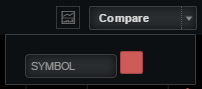
You can view market information from around the world using the Global Market Summary. It lets you monitor price movement of key market Indices, Commodities and Currencies with last traded price, change and %change data. Information on GMS such as oil prices, FX, major market movements internationally and regionally affect local markets and useful for investors.
The price movement of these Indices, Commodity and Currency sets is presented in a chart as well, and you can click on a required time period on the chart to change its history.
Note: price data on the Global Market Summary subject to few seconds delay. Please contact Customer Support if you need to subscribe for real-time data.
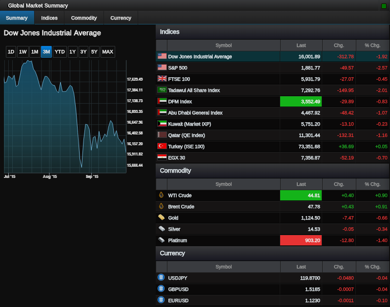
Real-time Advices exclusively provided by Mubasher. RTAs are technical analysis-based alerts providing you with real-time trading viewpoints helping you to make the right decision throughout the trading session
- Click on 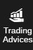 Trading Advice on the console
- You can either Buy by clicking on or view the full report by clicking on

To view Market information, go to 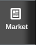 tab on the left pane.
You will have the widgets;
- Market Announcements – Announcements related to Markets subscribed by you
- Market News – News related to Markets subscribed by you
- Top Stocks - Top gainers/loser in the market. The easy options will help you to filter out exactly what you need. Select the required exchange and the category from the given dropdowns.
- Sector Breakdown Based on Turnover - According to Markets subscribed by you
This section describes the trading functionality available in MTrade Plus. You need to have a trading account with your broker in order to use the trading functions.
The following information will help you place buy / sell orders for a selected stock. MTrade Plus provides you an easy to understand and efficient order entry interface.
When placing an order, you should specify the portfolio details, symbol details, order type, price, quantity, and order validity.
- There are several ways to add symbols to the Order Ticket.
- In the Watch List, click the Buy icon on the symbol that you want to buy.
- On the Detail Quote, Order Book or Chart screens of a symbol, click the Buy icon .
- In the Order Ticket, type and search the symbol name on the Symbol field.
- If you have more than one portfolio, then select the required from the Portfolio drop down.
- In the Order Ticket window for buying a stock, the Buying Power indicates the available amount in your portfolio which can be utilized to purchase stocks. Generally for most customers Buying Power would indicate the Cash in hand, but if you are a Margin Customer, then this will take into consideration Margin Limits, Symbol Margin ability & Symbol concentration aspects as defined in your Margin agreement.
- Different Order Types:
- Market - is sent to the market and is executed at the best bid for sell orders or best ask for buy orders, as available at the time.
- Limit - is an order where the maximum buying price or the minimum selling price is specified. The order will be executed at the specified price or better.
- Stop - is a market order that is sent to the exchange when the trigger price (the STOP price) is touched. When the specified price is reached, your Stop Order becomes a Market Order and is executed at the best available price.
- Stop Limit - is an order that combines the features of a Stop Order and a Limit Order. It is an order to buy a security at no more or sell at no less than a specified Limit Price. Once the Stop Price is reached, the Limit Order is sent to the exchange to buy or to sell at a specified price.
- Select other optional order details depending on the requirement.
All or Non – When this option is selected, the order will be executed only if it fills the quantity that you entered.
Intraday - When this is selected, day margin buying power gets calculated and it will be utilized for trading.
Good Till – This option lets you select an expiration date and time up until which an order will continue to work.
Action – With this option you can select whether to buy or sell a share.
Stop Price – This is the price of a Stop order that triggers creation of market order.
- Once the required details are entered, you can click the Buy or Sell button.
- In order to place the order, you need to enter your Trading Password. This is a security measurement set in order to ensure that no one else can place an order using your trading account.
In the Order Ticket,
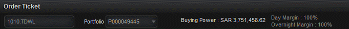
And in the Order Ticket window for selling a stock, the Available Qty. indicates the amount of stocks available to sell in your portfolio for the particular symbol.
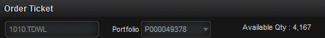
If Overnight Margin or Intraday Margin is enabled for your trading account, the percentages are given in the Order Ticket.
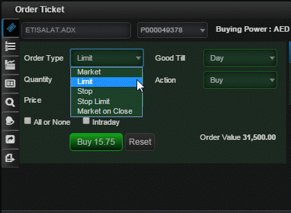
After you select the order type, you can then enter the Quantity of stocks and the Price of a stock that you are going to purchase. Price is not a mandatory field for certain order types such as ‘Market’ orders.
Details section contains;
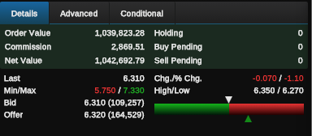Order Value - multiplication of the Order Quantity and the Order Price.
Commission - is calculated by the system as per the commissions defined for the exchange.
Net Value – this is the total Order Value including the Commission.
Holding - displays the number of shares you have already purchased from the symbol.
Buy Pending and Sell Pending - reflect any pending buy and sell orders you have placed for the symbol.
'Advanced’ section contains:
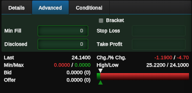Min Fill – Enter an amount here so that the order will only begin to trade if it has the required minimum number of shares (Min Fill) that you entered.
Disclosed – This is the amount that you reveal as the quantity when placing an order. This option is based on the privileges given by the exchange.
Place Take Profit / Stop Loss Orders – Click this check-box to enable the Stop Loss and Take Profit fields given below.
For more details, click here.
Stop Loss – Shows the calculated amount of the Stop Loss margin.
Take Profit – Shows the calculated amount of the Take Profit margin.
After you placed an order, you can monitor its progress using the Order List.
Use this procedure to trigger your order only when the specified price criteria are met.
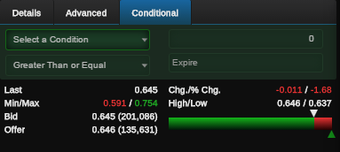
To place a Conditional Order:
- In the Order Ticket, enter the Symbol name, Portfolio and the Order Type. The Order Type should be either Market or Limit.
- Click the Conditional tab.
- Select the required conditions. E.g.: Last price Greater Than or Equal AED 6.70.
- Select the validity period using the Expire calendar.
- To place the order, click Buy or Sell as applicable. A message opens to confirm the order.
- Enter the Trading Password and click Confirm Order.
Order List shows the status of orders you placed on a current trading day.
Once you place an order using MTrade Plus, the order is validated and sent to the Order Management System. During this time, the order will proceed to one of the following statuses:
Queued, Filled, Partially Filled, or Rejected.
The active orders once sent to the exchange, try to find a match from the other side of the Order Book. If a match is not found, then the orders are stored in the Order Book as per the price/time priority. The status of such orders is displayed as Queued in the Order List. Once the order is matched the status in the Order List is updated to Filled.
Please note here the order statuses can differ depending on the exchange.
Once the order you placed is filled, or is partially filled, it is reflected in the Portfolio and the cash balance is updated in the Account Summary window.
To view the placed orders:
- On the Order ticket panel click the Order List icon 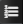.
To view details of an order:
- Click on the symbol name of the required order in the Order List.
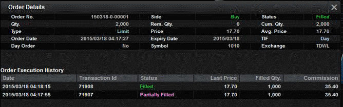
Use this procedure to alter some information in the order you had placed already. When amending an order, you can change only a part of the order which is still not executed.
The Amend option is active if the orders meet the following states. Note that the order statuses can differ depending on the exchange.
- Queued
- Partially Filled
- Replaced
To amend an order:
- In the Order List window, click the Amend icon
 .
. - In the Amend order window, edit the required details in Order Type, Quantity, Price, Good Till areas.
- Click Amend.
- Enter the Trading Password in the Confirm Order window and click Confirm Order.
Note: Price is editable only for Limit orders.
After amending an order, the order status is changed to Replaced in the Order List and will be updated accordingly based on the execution of the order.
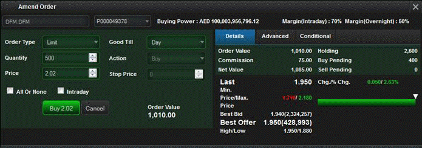
You can also cancel an order before it gets executed during following statuses.
- Queued
- Partially Filled
- Replaced
In case if an order is partially filled, the rest of the order which is not executed can be cancelled. After cancelling a General Order, the system sends a new order with a new Order ID.
To cancel an order:
- In the Order List window, click the Cancel icon
 .
. - In the Cancel order window, click Cancel.
- Enter the Trading Password in the Cancel Order window and click Cancel Order.
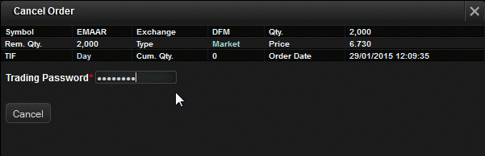
From the Account Summary, you can get a quick view of your cash account. The information displayed in Account Summary is updated in real-time and is shown in the currency that you select from the Currency dropdown. As and when you place a buy order, the system blocks the value of the order from the cash account (reflected in the Pending Withdrawal Amount) and once the order is filled the blocked amount becomes zero.
When a sell order is placed, the order value is reflected as Unsettled Sales and once the order is filled the Cash Balance is updated.
If any of your portfolios are margin enabled, you can view those details from Margin Details section. This section gives a clear picture of your margin details, including the margin limit set for Overnight and Intraday and many more.
To view the Account Summary:
- On the Trade Console pane click the Account Summary icon
 .
. - If you have more than one portfolio, then select the required from the Portfolio list.
- Select the related currency from the Currency list.
You will see a summary of your account details.
Account Summary Details
The following columns are available in the Account Summary window.
Cash and Positions Summary
Cash Available for Withdrawal - The cash amount available for withdrawal (Cash Balance - Pending Withdrawal Amount)
Unsettled Sales - The unsettled amount of the sell orders placed
Cash Balance - The cumulative value of your cash account
Pending Amount (Withdrawals and Orders) - The amount blocked when placing the buy orders, pending cash withdrawals etc.
OD Limit – Overdraft Limit given
Holdings Market Value – The market value of your holdings is displayed
Account Net Worth – The amount available in your cash account once the liabilities are subtracted
Buying Power - The amount of cash available to buy stocks (Cash Available for Withdrawal + OD Limit + Margin)
Unrealised Gain/LossProfit or loss that is yet to be cashed
Margin Details
For Margin accounts
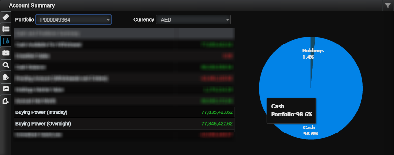Buying Power (Intraday) - The amount of cash available to buy stocks (Intraday)
Buying Power (Overnight) - The amount of cash available to buy stocks (Overnight)
The portfolio gives a live valuation of your securities based on their current market value, the purchase price and the number of shares held. The Portfolio window helps you manage your accounts, giving you a total overview of trading so that you can easily track the profits and losses on your securities account. You can get an idea of the account at a glance as a profit is displayed in Green and a loss is displayed in Red.
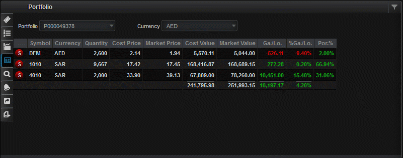
The Order Search feature in MTrade Plus helps you search for all orders you have placed in the past.
To search:
- Click on the search icon

- Enter the detail (You can search orders by Portfolio, Status, From and To dates and the Order No.)
- Once you entered the search criteria tap the Search button 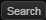 to get the matching details.
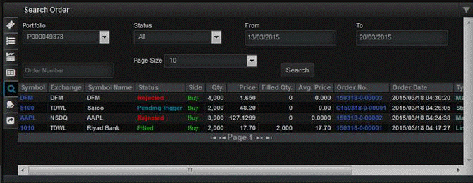
Note: From the Order Search screen, you can amend or cancel an order.
To view Order Details:
- In the Search Order list, click on the symbol name of the order that you need to view details.
To amend an order:
- In the Order Search window, tap on the order that you need to amend and select Amend.
- In the Amend Order window, enter the necessary details and tap Amend.
To cancel an order:
- In the Order Search window, tap on the order that you need to cancel and select Cancel.
- In the Cancel Order window, enter the necessary details and tap Cancel.
This feature gives a notification of every trading activity that you do with MTrade Plus. For example, when an order you placed gets filled, when you deposit money to your account or withdraw money from our account, such notifications will get listed under Trading Alerts.
To view Trading Alerts:
- On the Trade Console pane click the Trading Alerts icon
 .
.
- Click All Alerts to view entire notifications.
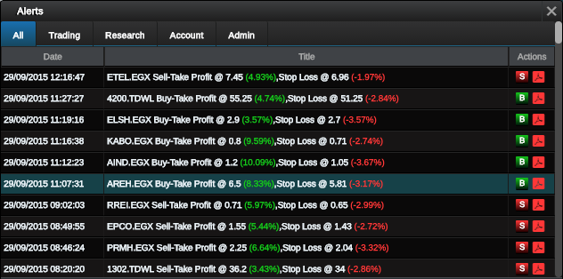
With this feature you can deposit cash to your account, withdraw cash from your account and transfer cash from one portfolio to another. You can also view the status of deposit, withdrawal and transfer requests you made from the History tab in this window.
To deposit cash to your account:
- On the Trade Console pane click the Requests icon 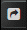.
- Click on the Deposit Notification tab.
- Enter details in the required fields.
- Once you enter the details, provide the trading password to authenticate your action.
- Click Submit.
Note: There are three payment methods when you deposit and withdraw cash. Depend on the method that you select here, the related fields will be activated.
To withdraw cash from your account:
- On the Trade Console pane click the Requests icon .
- Click on the Withdrawal Request tab.
- Enter necessary details in the given fields.
- Once you enter the details, provide the trading password to authenticate your action.
- Click Submit.
To transfer cash from one portfolio to another:
- On the Trade Console pane click the Requests icon .
- Click on the Transfer Request tab.
- Enter necessary details in the given fields.
- Provide the trading password to authenticate your action.
- Click Submit.
To view the status of all deposit, withdrawal and transfer requests:
- On the Trade Console pane click the Requests icon .
- Click on the History tab.
- Specify the filter criteria from the dropdowns given.
- Click Search. The records that meet the specified search criteria will be displayed.
With the Account Statement feature, you can view cash deposits, withdrawal details, and portfolio details for a certain month.
To view cash deposits & withdrawal details:
- On the Trade Console pane click the Account Statement icon 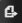.
- Select the required Portfolio if you have more than one.
- Select Cash Statement as the Statement Type.
- Select the required Month that you need to view the details for.
- Click Submit.
Note: To get a report of your portfolio details, select Holding Statement as the Statement Type.
This section describes the price information you can view using MTrade Plus.
Detail Quote provides price and volume data, which are basically the most important information every investor needs to know when evaluating the performance of a security. From the Detail Quote you can react to the market instantly by invoking Buy  or Sell order windows.
or Sell order windows.
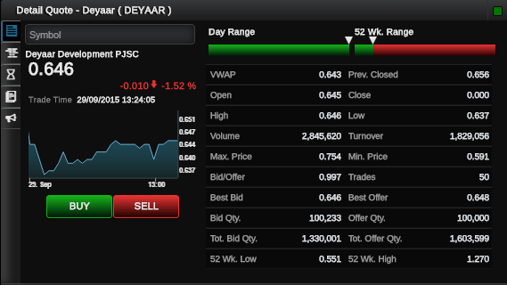
To view the Detail Quote of a symbol:
- Click on a symbol in the Watch List. When you click on the symbol, the Detail Quote window will display the data of the selected symbol.
- Enter the symbol name in the Detail Quote window.
-Or-
Order Book gives an indication of the liquidity for a particular symbol. The higher the number of buy and sell orders at each price, the higher the depth of the market.
To view the Order Book of a symbol:
- Click the Order Book icon 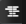.
- Do one of the following;
- Click on a symbol in the Watch List. When you click on the symbol, Order Book window will display the data of the selected symbol.
- Enter the symbol name in the Order Book window.
–Or-
By default, the Price side will be displayed. Click the Order tab to view the Order side.
Tip: You can click the Buy or Sell buttons and place trades from Order Book view.
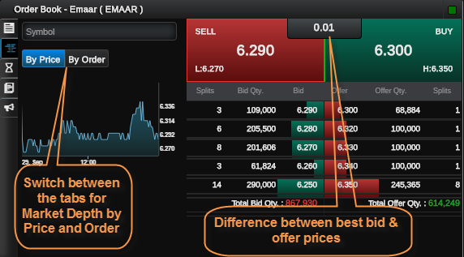
Time and Sales is the most in depth display of a market’s trading information. It shows each individual trade as it occurs, with the time, number of units and the price at which they were executed for a given day.
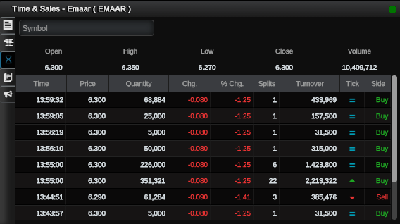
To view Time and Sales details for a symbol:
- Click the Time and Sales icon
 .
. - Do one of the following;
- Click on a symbol in the Watch List. When you click on the symbol, Time and Sales window will display the data of the selected symbol.
- Enter the symbol name in the Time and Sales window.
–Or-
You can get updated with latest news and announcements using the ‘News’ and ‘Announcements’ features available in MTrade Plus. Also, you can filter news or announcement items through providers for your ease.
To view News:
- Click the News icon
 .
. - Click the Filter icon given at the right corner of the News window.
- Select the required provider from the given options.
- When the specified news displayed, click on the required news item to view its full details.
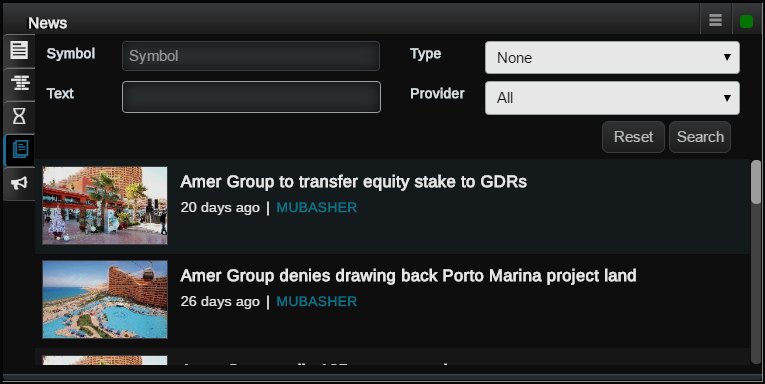
To view announcements for a specific symbol:
- Click the Announcements icon
 .
. - Click the Filter icon given at the right corner of the Announcements window.
- Tick the required category;
- When the specified announcements displayed, tap on the required item to view its full details.
All: Once selected displays announcements of all the markets together.
Market: Tick Market and specify the market name to view announcements for the specified market.
Watch List: Tick this and select a Watch list from the dropdown to view announcements for the symbols included in the selected Watch list.
Symbol: Tick Symbol and enter the symbol name to view announcements for the symbol.
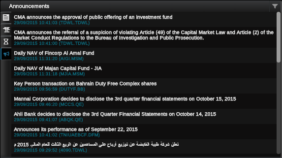
Option is a derivative instrument build upon an Underlying symbol. They will be traded as a standard instrument in a stock exchange.
Using this feature you can select an Option to trade. You can select either a Call option or a Put option to get in to an Option contract.
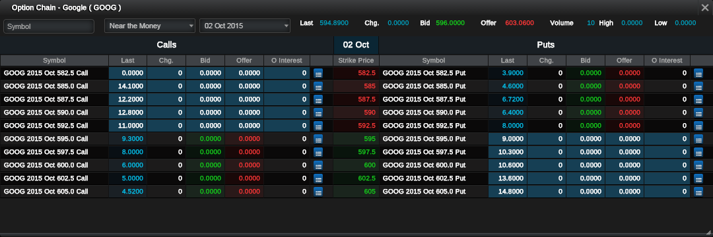
To place an Option order:
- Right-click on the symbol of your preference and select Option Chain
- You will see the above window. Click this icon against the Option and select Buy or Sell as required.
- In the Order Ticket, specify the order details relevant to the Option. i.e.: Action, Order Type, Quantity etc.
- Click Buy / Sell and confirm the order.
- To check the status of the order, go to Order List.
MTrade Plus comes with two language options for your ease. The available language options are English and Arabic.
To change the language:
- On the login screen, select the required language from the options given at the top left corner.
- Click the Settings button and select the required language.
-or-
Use the theme selection option to customize the application with the preferred theme colour. You can switch from Dark to Light theme and vice versa to feel a different experience.
To change the theme:
- Click the Settings button and select the required theme.
You can change the login and trade passwords of MTrade Plus whenever required. The login password is used to login to the application and the trade password is an additional password that you will have to input while placing transactions through the application. This is a measure to provide the online users another level of security.
To change passwords:
- Go to Settings .
- Select Change Password.
- In the Password Change window, enter the old and new passwords in respective fields.
- Click on Submit for the new passwords to take effect.
Notes:
- In order to ensure the strength of your passwords, you will have to use alphanumeric characters.
- You will have to update both passwords (login and trading) for the change to take effect.
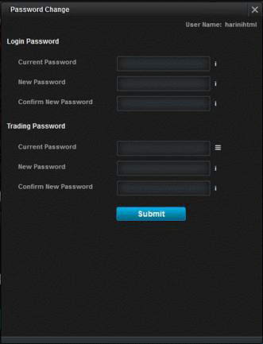
Use the Contact Support section to send us complain, inform about a bug or to make a suggestion.
To Contact Support:
- Go to Settings .
- Select whether it is a Complain, Usage Bug or a Suggestion.
- Enter the Subject and Details in the given areas.
- Select the required form that you need to get contacted by our support team. i.e.: Email, Phone. Select Not Required if you do not need to get contacted.
- Click Submit.
By selecting the options given in this section, you will not get price and quantity fields in the Order Ticket filled with values. Instead, you can manually enter them as required.
However, if you want to see these values in the Order Ticket, then uncheck the relevant boxes.
To show price empty:
- In the Settings window, go to Order Settings.
- Click the Show Price Empty check-box and click Save.
To show quantity empty:
- In the Settings window, go to Order Settings.
- Click the Show Quantity Empty check-box and click Save.
This feature lets you set margins, in order to calculate the Take Profit and Stop Loss amounts as a percentage of the market price of the stock. When you set a percentage for Take Profit and Stop Loss Margin, (for example 50%) it will be used to calculate Take Profit and Stop Loss amount in the Order Ticket.
Once the order is executed, another order (stop loss/take profit) is created by the system and put into pending state. If the market price hits the Take Profit, system sends the pending order to the market with Take Profit as the order price. If the market price hits the Stop Loss, system sends the pending order to the market with Stop Loss as the order price.
In this example, the market price of the stock is AED 8.08, and based on the margins you set, Take Profit is 12.105 and Stop Loss is 4.035.
To set the Take Profit and Stop Loss prices:
- In the Settings window, go to Order Settings.
- Set margins for Take Profit and Stop Loss.
- Click Save and close the window.
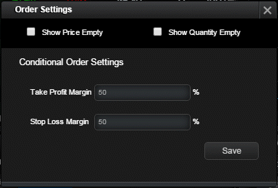
In the Order Ticket,
- When you are going to place a trade, check the Bracket field in the Advanced tab. Take Profit and Stop Loss amount will be displayed.
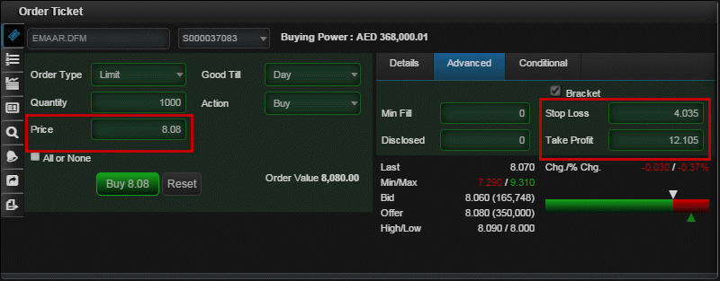
Disclaimer
Copyright (c) 2017 Mubasher Financial Services. All Rights Reserved. Designated trademarks and brands are the property of their respective owners.
Notice of Non-Liability
The data and the screenshots used in this Help Guide are solely for illustration purposes and the actual data and interfaces may differ depending on the prevailing market situation. Mubasher Financial Services and the authors assume no liability for errors, omissions or damages resulting from the use of this Help Guide or the information contained in this Help Guide.